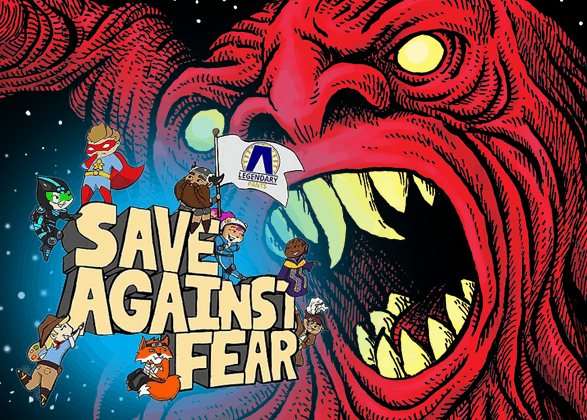
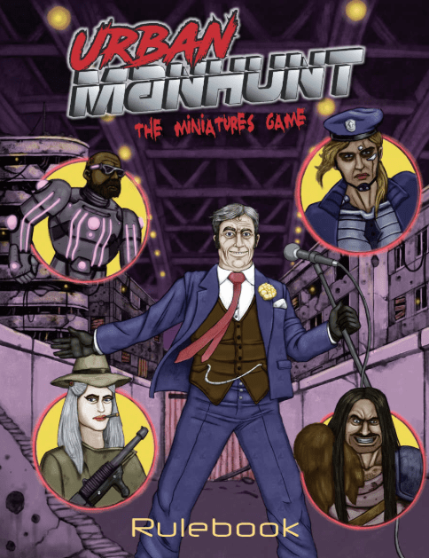
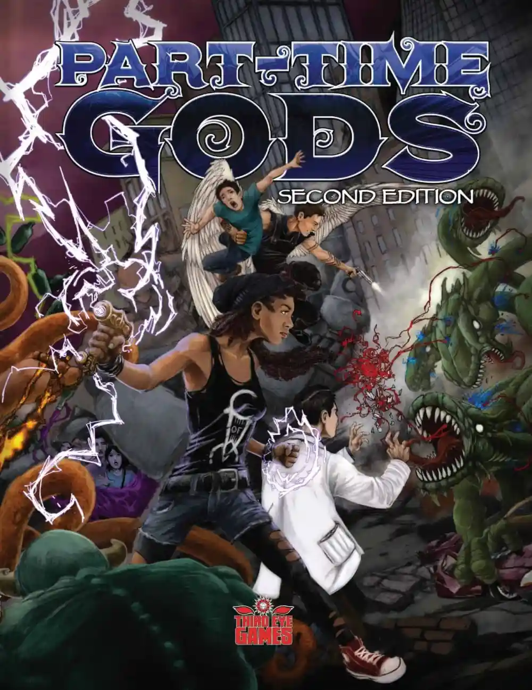

បទសម្ភាសន៍ GenZeroes ជាមួយ Ben Sawyer - Fan Expo 2022

ដោយ៖ Tyler Chanceyចេញផ្សាយ៖ 29 តុលា 2019នៅ ម៉ោង 10:00 ព្រឹក
អ្នកគាំទ្ររបស់ខ្ញុំ ខែតុលា មកដល់ទៀតហើយ ដូច្នេះអ្នកដឹងថាវាមានន័យយ៉ាងណា។ បាទ លក្ខណៈពិសេសមួយទៀតអំពីវត្ថុល្អៗដែលខ្ញុំបានជួបប្រទះនៅឯសន្និបាតសុវត្ថិភាពប្រឆាំងនឹងការភ័យខ្លាចក្នុងតំបន់ ដែលរៀបចំដោយមនុស្សអស្ចារ្យនៃក្រុម The Bodhana Group។
នេះជាឆ្នាំទី 3 របស់ខ្ញុំដែលបានចូលរួមក្នុងព្រឹត្តិការណ៍នេះ ហើយសរសេរវាឡើង ដូច្នេះប្រសិនបើអ្នកត្រូវការពិនិត្យឡើងវិញនូវអ្វីដែល Bodhana Group តំណាងឱ្យ សូមកុំភ្លេចពិនិត្យមើលចំណុចសំខាន់ៗពី ពីរឆ្នាំចុងក្រោយដែល ខ្ញុំបានចូលរួម។
ដូចពីមុន Save Against Fear កាន់តែធំ និងមានមហិច្ឆតាកាន់តែច្រើននៅឆ្នាំនេះ ហើយខ្ញុំជាមនុស្សតែម្នាក់គត់ដែលចូលរួមអ្វីដែលខ្ញុំអាចធ្វើបាន ដូច្នេះមុខងារពិសេសនេះអាចគ្របដណ្តប់បានច្រើន។ ជាឧទាហរណ៍ រឿងព្រេងនិទានរបស់ឧស្សាហកម្ម Edy Webb បានចូលរួមម្តងទៀតនូវកំណែ RPG ដែលផ្តល់មូលនិធិដោយហ្វូងមនុស្សរបស់គាត់ (ឥឡូវនេះដោយជោគជ័យ) Pirates of Pugmire ហើយបាននិយាយនៅបន្ទះជាច្រើន ប៉ុន្តែខ្ញុំបានបាត់គាត់ជារៀងរាល់ថ្ងៃនៃការប្រជុំ។ រឿងរ៉ាវខ្លីៗ កាលវិភាគត្រូវបានគ្រប់គ្រងដោយឌីជីថល ឧបករណ៍ឆ្លាតវៃរបស់ខ្ញុំបានសម្រេចចិត្តស្លាប់ ហើយអ្វីៗទាំងអស់បានទៅដោយសុខស្រួល។ លើសពីនេះម្តងទៀត ខ្ញុំជាមនុស្សតែម្នាក់ ហើយសូម្បីតែនៅក្នុងសន្និបាតតូចតាចបែបនេះ ខ្ញុំមិនអាចមើលឃើញអ្វីទាំងអស់។
ដូច្នេះដោយមិនមានការភ្ញាក់ផ្អើលទៀតទេ ចូរយើងបញ្ចេញពន្លឺ និងបំភ្លឺបទពិសោធដ៏អស្ចារ្យមួយចំនួននៅក្នុងគ្រាដ៏ងងឹត និងគួរឱ្យខ្លាចនេះ ដោយចាប់ផ្ដើមពី…

4ការប្រមាញ់ទីក្រុង
Spectrum Games គឺជាក្រុមហ៊ុនដែលពិតជាសមនឹងទទួលបានការស្រលាញ់ និងការទទួលស្គាល់ច្រើនជាងពួកគេទទួលបាននៅក្នុងវិស័យហ្គេមកុំព្យូទ័រ។ ខណៈពេលដែលឈ្មោះធំៗជាច្រើននៅក្នុងអាជីវកម្ម ដូចជា Dungeons and Dragons , World of Darkness ជាដើម ផ្តោតលើការកំណត់ និងបទពិសោធន៍បែបស្រមើស្រមៃក្នុងផ្ទះបាយធំ គម្រោងរបស់ Spectrum គឺជាក់លាក់ជាង។ ប្រាកដណាស់ ការកំណត់រវើរវាយទីក្រុងរបស់ Onyx Path Publishing គឺសំបូរទៅដោយទេវកថាដែលលាតសន្ធឹងរាប់សហស្សវត្សរ៍នៃនយោបាយបិសាចជញ្ជក់ឈាម អ្នកជំនួយការបំផ្លិចបំផ្លាញការពិត និងព្រះងងឹតទើបតែទុំជាមួយនឹងលទ្ធភាពនៃការនិទានរឿង តាមពិតយើងដល់ពេលសម្រាប់ការសម្របតាមវីដេអូហ្គេមទីបីរបស់យើងនៃសម្ភារៈនោះ នៅក្នុងឆ្នាំ 2020។ប៉ុន្តែមាត្រដ្ឋានប្រភេទនោះមិនអាចត្រូវបានបង្កើតឡើងឱ្យសមនឹងអ្វីដែលបរិសុទ្ធ និងត្រង់នោះទេ។ ដូចជាការចង់លេងហ្គេមដែលអ្នកលេងនៅក្នុងរូបថ្លុកឆ្នាំ 1980 ដែលពោរពេញដោយច្បាប់ស្តីពីរបៀបធ្វើទីផ្សារឈុត និងគ្រឿងបន្លាស់របស់វីរបុរសផ្សេងៗរបស់អ្នក។ ឬលេងជាក្រុមក្មេងជំទង់ឆោតល្ងង់នៅក្នុងខ្សែភាពយន្ត campy slasher ដែលជាកន្លែងមួយដែលអ្នកទទួលបានរង្វាន់សម្រាប់ការលេងចូលទៅក្នុងតំបន់ត្រូពិច និង cliches ដូចជាការស៊ើបអង្កេតសំឡេងចម្លែកតែម្នាក់ឯង ឬមិនទូរស័ព្ទទៅប៉ូលីស ឬផឹកស្រា និងធ្វើគ្រឿងញៀន ខណៈពេលដែលឃាតករកំពុងធូររលុង។
Spectrum បានរកឃើញទីផ្សារពិសេសរបស់ពួកគេជាមួយនឹងបទពិសោធន៍ទាំងនេះ ហើយពួកគេតែងតែគ្រប់គ្រងដើម្បីឱ្យមានតម្លៃសមរម្យ និងអាចចូលប្រើប្រាស់បានច្រើនជាងអាហារបំប៉ន និងការពង្រីកជាច្រើនដែលឈ្មោះធំៗផ្សេងទៀតដើរជុំវិញ។
ឥឡូវនេះ គម្រោងចុងក្រោយរបស់ពួកគេហាក់ដូចជាជំរុញមហិច្ឆិតានេះបន្ថែមទៀតជាមួយនឹងហ្គេមសង្គ្រាមខ្នាតតូចដែលមានតម្លៃសមរម្យ ដែលសត្វស្វា និងអារម្មណ៍សោភ័ណភាពនៃកីឡាបង្ហូរឈាម dystopian នាពេលអនាគត Urban Manhunt ។
ខ្ញុំអាចអង្គុយចុះ ហើយពិនិត្យមើលការបង្ហាញនៃ Urban Manhunt ជាមួយប្រធាននៃ Spectrum Games ដែលជា Cynthia Celeste Miller ជាទីគោរព ហើយបានចូលទៅក្នុងការសម្លាប់រង្គាល។ គំនិតនេះគឺថាអ្នកលេងម្នាក់ៗដើរតួជាកំពូលទាហានដែលមានល្បិចកលប្លែកៗដូចជា cyborg gorilla ពេជ្ឈឃាតក្នុងគ្រឿងសឹកទំនើប ឬ mutant ដ៏គួរឱ្យរន្ធត់។ គោលបំណងនៃល្បែងនេះគឺមិនធ្វើឱ្យប៉ះពាល់ដល់គ្នាទៅវិញទៅមកទេ ប៉ុន្តែដើម្បីបំបែកពិន្ទុដោយការសម្លាប់ឧក្រិដ្ឋជនក្នុងទម្រង់ផ្សេងៗគ្នាដែលបោះចូលទៅក្នុងសង្វៀនដើម្បីប្រឈមមុខនឹងយុត្តិធម៌ក្បាច់គុន។ មានប្រព័ន្ធមួយសម្រាប់របៀបដែលអ្នកសម្លាប់អ្នកទោសទាំងនេះ ការបង្កើនថាមពល និងសូម្បីតែម៉ាស៊ីននាឡិកាដែលគូសធីកក្នុងទម្រង់ជាសន្លឹកបៀដែលបំពេញការផ្លាស់ប្តូរដ៏ច្រើននៅលើសង្វៀន។
ម្យ៉ាងវិញទៀត វាគឺជាហ្គេមខ្នាតតូចក្រៅផ្លូវការដែលសម្របខ្លួនរបស់ The Running Man ដែលជាការពិតដែល Cynthia សារភាពភ្លាមៗដោយមិនមានការខ្មាស់អៀនអ្វីទាំងអស់។
ការប្រកួតទាំងមូលបានកន្លងផុតទៅដោយមិនមានពេលវេលាទាល់តែសោះ។ មនុស្សកំពុងត្រេកអរ នៅពេលដែលសត្វចម្លែករបស់យើងបានបាញ់ និងកាត់អ្វីៗគ្រប់យ៉ាងតាំងពីក្មេងឃ្វាលគោ រហូតដល់មេធាវីស្រមោល ការលេងសើចមិនល្អបានកើតឡើងនៅពេលដែលការប្រយុទ្ធគ្នាដោយកាំភ្លើងជាច្រើនដងបន្តបន្ទាប់គ្នាដោយគ្មានការខូចខាតបន្តិចបន្តួច ហើយរឿងទាំងមូលបានបញ្ចប់ដោយអ្នកឈ្នះដោយឡែកនៅភាគខាងជើង។ នៃ សែសិប ពិន្ទុ .... ជាមួយ អ្នក ផ្សេង ទៀត បាន ទទួល ចំណាត់ ថ្នាក់ ទី ពីរ ជាមួយ ដប់ប្រាំមួយ ។ វាជាពេលវេលាដ៏ចម្លែក ប៉ុន្តែគួរឱ្យអស់សំណើច។
អ្វីដែលប្លែកសម្រាប់ខ្ញុំបន្ទាប់ពីបានលេងគឺថាតើហ្គេមនេះមានតម្លៃសមរម្យប៉ុណ្ណា។ ខ្ញុំតែងតែចាប់អារម្មណ៍នឹងការលេងហ្គេមសង្រ្គាម ប៉ុន្តែមិនដែលចូលទៅក្នុងវាទេ ដោយសារតែការវិនិយោគរបស់វាមានចំនួនប៉ុន្មាន។ ជាក់ស្តែង ការព្យាយាមចូលទៅក្នុងអ្វីមួយដូចជា Warhammer 40,000អាចធ្វើឱ្យអ្នកចំណាយភាគខាងជើងមួយរយដុល្លារ ហើយនោះគ្រាន់តែជាមូលដ្ឋានគ្រឹះទាំងស្រុងប៉ុណ្ណោះ ប្រសិនបើអ្នកចង់វិនិយោគលើហ្គេមណាមួយនៃបក្សពួកជាច្រើន ត្រូវបានរៀបចំដើម្បីចំណាយកាន់តែច្រើន។ Urban Manhunt ដោយការប្រៀបធៀបអនុញ្ញាតឱ្យអ្នកលេងជាមួយបំណែកក្រដាសធម្មតាដែលអាចបោះពុម្ពបាន និងប្រដាប់ប្រដាធ្វើពីក្រដាស ដែលអាចរកបានដោយមិនគិតថ្លៃបន្ថែមនៅលើគេហទំព័ររបស់ Spectrum ។ ហ្គេមនេះថែមទាំងគាំទ្រការបង្កើតអ្នកចម្បាំងតែមួយគត់របស់អ្នកសម្រាប់ហ្គេម ដែលបន្ទាប់មកអ្នកអាចតំណាងដោយតួលេខដែលអាចប្ដូរតាមបំណងរបស់អ្នកបានប្រសិនបើអ្នកចង់បាន។ អ្វីដែលអ្នកត្រូវការគឺសៀវភៅ តុធំល្មម ហើយប្រហែលជាពែង ឬកំប៉ុងខ្លះសម្រាប់ដី ហើយអ្នកត្រៀមខ្លួនជាស្រេច។
ខ្ញុំមិនអាចនិយាយបានថាច្បាប់ឈានដល់កម្រិតដែលគួរឱ្យភ្ញាក់ផ្អើលនោះទេ ខណៈដែលហ្គេមខ្នាតតូចដែលមានទម្រង់ខ្ពស់មួយចំនួននៅទីនោះ ប៉ុន្តែ Urban Manhunt ធ្វើឱ្យមានការចាប់អារម្មណ៍យ៉ាងខ្លាំងដោយរក្សាភាពខ្លាំងនៃការងារកន្លងមករបស់ Spectrum ។ ការផ្តោតអារម្មណ៍យ៉ាងតឹងរ៉ឹងលើការត្រាប់តាមប្រភេទ និងភាពជាក់ស្តែង ហើយត្រូវប្រាកដថាការលេងហ្គេមរបស់ពួកគេមិនធ្វើឱ្យខូចធនាគារនោះទេ។

ព្រះក្រៅម៉ោង
នៅពេលដែលខ្ញុំបានលឺឈ្មោះរបស់ RPG នេះជាលើកដំបូង វាស្តាប់ទៅដូចជាការសន្និដ្ឋាននៃរឿងកំប្លែងដ៏ចម្លែកមួយ។ សូមអបអរសាទរ អ្នកបានក្លាយជាព្រះដ៏ទេវភាពលើកម្លាំងមូលដ្ឋានមួយចំនួននៃសកលលោក... ប៉ុន្តែអ្នកនៅតែត្រូវបង់ថ្លៃជួល និងទៅសាលារៀនសម្រាប់សញ្ញាបត្ររបស់អ្នក។ ជាក់ស្តែង វានឹងមិនធ្វើឱ្យខ្ញុំភ្ញាក់ផ្អើលទេ ប្រសិនបើ Taika Waititi មានសេចក្តីព្រាងសម្រាប់កន្លែងណាមួយដែលត្រៀមរួចជាស្រេចដើម្បីដាក់ឱ្យដំណើរការ។
ហើយគួរឲ្យសោកស្ដាយ ខ្ញុំមិនបានដឹងអំពីអ្នករចនានាំមុខគេនៃហ្គេម Eloy Lesanta រហូតដល់ខ្ញុំបានឃើញគាត់នៅលើបន្ទះក្តារនៅក្នុងព្រឹត្តិការណ៍ឆ្នាំនេះ។ និយាយឱ្យសាមញ្ញ បុរសម្នាក់នេះដឹងពីសិប្បកម្មនៃការបង្កើតហ្គេមដែលគួរឱ្យចាប់អារម្មណ៍ ការងាររបស់គាត់ដែលលាតសន្ធឹងពីបទពិសោធន៍រវើរវាយរបស់កុមារអំពី ជំរុំទេវកថា ទៅកាន់ភាពសម្បូរបែបនៃប្រវត្តិសាស្រ្តនៃ ទីបេ ។ ការងារថ្មីៗបំផុតរបស់គាត់រួមមាន Apocalypse Prevention Inc. និង Mermaid Adventures ។ សរុបមក គាត់បានធ្វើការលើអ្វីៗគ្រប់យ៉ាង តាំងពីការសប្បាយ រហូតដល់ការបោះជំរុំ សូម្បីតែឈ្នះពានរង្វាន់សម្រាប់ការរចនារបស់គាត់។
ដូច្នេះតាមធម្មជាតិ គាត់គឺជាបាល់ដាច់ខាតក្នុងនាមជា GM សម្រាប់ការណែនាំរបស់ខ្ញុំទៅកាន់ពិភពលោករបស់គាត់ ហើយវាពិតជាដូចដែលខ្ញុំបានពណ៌នាវាកាលពីដើមដំបូង។ ព្រះចាស់ពី pantheons ដែលធ្លាប់ស្គាល់របស់យើងបានស្លាប់ ឬបានធ្លាក់ចេញពីឆាកពិភពលោហធាតុ ហើយដោយសារថាមពលសកលដ៏អាថ៌កំបាំងមួយចំនួនដែលគេស្គាល់ថាជាប្រភព ផ្កាភ្លើងដ៏ទេវភាពថ្មីបានចាប់ផ្តើមឆេះនៅក្នុងមនុស្សដែលហាក់ដូចជាមនុស្សជាមធ្យម។ ក្លាយជាព្រះនៃវត្ថុដែលអាចយល់បាន ដូចជាត្រជាក់ ឬធ្វើដំណើរទៅកាន់វត្ថុជាអរូបី ដូចជាសេចក្ដីស្លាប់ និងសម្រស់។ ប៉ុន្តែអំណាចមិនកម្ចាត់បញ្ហានោះទេ វាគ្រាន់តែធ្វើឱ្យពួកគេកាន់តែច្រើន។ ប្រសិនបើអ្នកមានការពេញចិត្តចំពោះ American Gods របស់ Neil Gaiman (រឿងកំប្លែង ឬកម្មវិធីទូរទស្សន៍) អ្នកគួរតែអាចចាប់យកការអំពាវនាវនៅទីនេះ។
នោះទាំងមូល “អ្នកជាព្រះ ប៉ុន្តែអ្នកនៅតែមានបញ្ហាក្នុងជីវិតរមែងស្លាប់” ការសន្និដ្ឋានគឺខ្លាំងជាងអ្វីដែលខ្ញុំបានដឹងដំបូងនៅពេលកំពុងលេង។ នៅក្នុង Part-Time Gods ពេលវេលា ទំនេររបស់អ្នកមានតម្លៃដូចការចំណាយរបស់អ្នក ហើយរបៀបដែលអ្នកជ្រើសរើសចំណាយ វាអាចមានន័យខុសគ្នារវាងអ្នកបាត់បង់ទំនាក់ទំនងដ៏មានឥទ្ធិពលជាមួយមិត្តភក្តិ ឬបាត់បង់ឥទ្ធិពលដ៏មានតម្លៃលើផ្នែកនៃពិភពលោករបស់អ្នក។ វានាំទៅរកបទពិសោធន៍ខាងសេដ្ឋកិច្ច និងសង្គមកាន់តែច្រើន ដែលពោរពេញទៅដោយការដើរតួ និងការនិទានរឿងដ៏មានអានុភាពដែលបានបញ្ចូលទៅក្នុងនោះ។
ជាឧទាហរណ៍ ម៉ូឌុលដែលខ្ញុំបានលេងផ្តោតលើការប្រមូលផ្ដុំនៃឃាតកម្មដ៏អាថ៌កំបាំងដែលកើតឡើងនៅក្នុងទឹកដីរបស់តួអង្គមួយ ហើយបុរសដែលខ្ញុំកំពុងលេងនោះគឺជានាយកប្រតិបត្តិដែលមានភាពសុខដុមជាមួយនឹងការថប់បារម្ភយ៉ាងខ្លាំង។ អ្នកផ្សេងទៀតត្រូវលេងសើចដូចជាមហាវិទ្យាល័យ ឬការងារ ប៉ុន្តែខ្ញុំគ្រាន់តែបន្តដុតបំផ្លាញទ្រព្យសម្បត្តិដើម្បីផ្លាស់ទីជុំវិញ និងស្វែងរករឿង ដោយសង្កត់ធ្ងន់លើទំនាក់ទំនងជាមួយសហការីនៃអំណាចដើម្បីដោះស្រាយអាថ៌កំបាំងឱ្យបានឆាប់តាមដែលអាចធ្វើទៅបាន។ យ៉ាងណាក៏ដោយ ខ្ញុំបានបន្តចាត់ទុកកុំព្យូទ័រផ្សេងទៀតដូចជាទំនិញ អ្វីៗសម្រាប់តែខ្ញុំផ្ទាល់ ឬដោយប្រយោលប៉ុណ្ណោះ ចាប់តាំងពីសកម្មភាពមានកំណត់របស់ពួកគេបានធ្វើឱ្យវាកាន់តែងាយស្រួលក្នុងការវាស់ស្ទង់ចលនាដោយចេតនារបស់ពួកគេ។ ដែលទាំងអស់នេះបានចងភ្ជាប់ទៅនឹងចរិត និងលក្ខណៈប្លែកៗរបស់តួអង្គ។ តាមធម្មជាតិ វានាំឱ្យមានជម្លោះ និងភាពតានតឹងក្នុងសង្គមនៅលើកំពូលនៃឧបាយកលទាំងអស់ វេទមន្តអក្ខរាវិរុទ្ធ និងមនុស្សយន្តឃាតករអេហ្ស៊ីបបុរាណ។
វានាំឱ្យខ្ញុំផ្ទុះសំណើចជាច្រើនដង ខណៈពេលដែលនិយាយម្តងហើយម្តងទៀតថាវាមិនមែនជាខ្ញុំជាតួឯកទេ ប៉ុន្តែជាតួអង្គដែលខ្ញុំកំពុងលេង។
នៅក្នុងវិធីជាច្រើន ប្រព័ន្ធរបស់ហ្គេមបានរំឭកខ្ញុំអំពីធាតុដ៏ល្អបំផុតពី ប្រព័ន្ធ World of Darkness' Storyteller និងគំនិតអរូបីដែលបានណែនាំនៅក្នុង Scion ប៉ុន្តែជាមួយនឹងការកែលម្អ និងរចនាសម្ព័ន្ធបន្ថែមទៀត។
ប្រាសាទឃាតកម្មរបស់ HH Holmes
ជាចុងក្រោយ ហ្គេមដ៏ធំចុងក្រោយដែលខ្ញុំមានឱកាសពិនិត្យមើលនៅ Save Against Fear មិនមែនជាបទពិសោធន៍ដែលបានចេញផ្សាយពេញលេញនោះទេ ប៉ុន្តែជាគំរូដើមដោយបុរសដែលមានទេពកោសល្យមួយចំនួន ដែលមានឈ្មោះថា HH Holmes' Murder Castle ។
និយាយឱ្យត្រង់ទៅ ទំពក់ដំបូងសម្រាប់ហ្គេមនេះ មិនមែនជាមេកានិក ឬល្បែងស៊ីសងកណ្តាលច្រើននោះទេ ប៉ុន្តែមានប្រវត្តិនៅពីក្រោយវា។ សម្រាប់អ្នកដែលមិនដឹង HH Holmes ត្រូវបានអ្នកប្រវត្តិសាស្រ្តជាច្រើនចាត់ទុកថាជាឃាតករសៀរៀលផ្លូវការដំបូងគេរបស់សហរដ្ឋអាមេរិក។ ឧក្រិដ្ឋកម្មរបស់គាត់ដែលពាក់ព័ន្ធនឹងការសម្លាប់ជនរងគ្រោះរបស់គាត់នៅក្នុងអគារផ្ទះល្វែងដ៏ឧឡារិកមួយដែលគាត់ជាកម្មសិទ្ធិ ពេញលេញជាមួយនឹងអន្ទាក់មរណៈ និងចុងស្លាប់ បន្ទាប់មកទទួលបានភាពសម្បូរបែបនៃការបាត់ខ្លួនរបស់ពួកគេតាមរយៈការក្លែងបន្លំធានារ៉ាប់រងអាយុជីវិត។ ប្រាសាទឃាតកម្មដ៏ល្បីនេះ ដូចដែលគេស្គាល់បានក្លាយទៅជារឿងដ៏ល្បីសម្រាប់ការប្រមូលផ្តុំជនរងគ្រោះក្នុងអំឡុងពេលពិព័រណ៍ពិភពលោកឆ្នាំ 1893 នៅទីក្រុងឈីកាហ្គោ។
ខ្ញុំលើកយកអ្វីៗទាំងអស់នេះឡើង ពីព្រោះអ្នកអភិវឌ្ឍន៍បានមើលឃើញពីប្រវត្តិដ៏ចម្លែកនេះ ដែលប្រហែលជា ឬមិនអាចចូលទៅក្នុងពិភពប្រជាប្រិយរបស់អាមេរិក ហើយគិតថាមានល្បែងក្តារដ៏គួរឱ្យទាក់ទាញមួយដែលត្រូវរកឃើញនៅទីនេះ។ ហើយបន្ទាប់ពីរីករាយនឹងវគ្គបន្តជាមួយពួកគេ និងជ្រើសរើសខួរក្បាលរបស់ពួកគេ ខ្ញុំអាចនិយាយបានថា ខណៈពេលដែលគំរូគឺរដុប និងត្រូវការប៉ូលា ខ្ញុំមានទំនោរចង់យល់ព្រម។
នៅលើផ្ទៃ Murder Castle លេងដូចហ្គេមក្តារដែលបង្កើតផែនទីស្តង់ដារ។ អ្នកលេងចំណាយវេនរបស់ពួកគេដើម្បីរុករកបន្ទប់ផ្សេងៗ រកមើលទម្រង់ផ្សេងៗនៃភស្តុតាងនៃសកម្មភាពឧក្រិដ្ឋកម្មរបស់ Holmes ទាំងអស់ខណៈពេលដែលកំពុងសម្លឹងមើលឃាតករដែលគួរឱ្យខ្លាចខ្លួនឯង។ មានប្រសិទ្ធភាពស្រដៀងទៅនឹងហ្គេមដូចជា House on Haunted Hill ប៉ុន្តែជាមួយនឹងអ្នកប្រឆាំងគ្រោះថ្នាក់ភ្លាមៗ។
ប៉ុន្តែអ្វីដែលគួរឱ្យចាប់អារម្មណ៍ជាពិសេសអំពីហ្គេមរបស់គាត់គឺរបៀបធ្វើសកម្មភាព។ ជាជាងឱ្យអ្នកលេងម្នាក់ៗធ្វើសកម្មភាពដោយឯករាជ្យជាមួយនឹងសកម្មភាពសាមញ្ញៗដូចជា រុករក ប្រមូល ឬរង់ចាំ វាមានក្រឡាចំនួនប្រាំមួយដាក់នៅកណ្តាលកន្លែងលេងជាមួយនឹងសកម្មភាពទាំងនេះ។ ទាំងនេះរាប់បញ្ចូលទាំងការផ្លាស់ទីលំនៅ ការស្វែងរកបន្ទប់ថ្មី ឬសូម្បីតែការផ្លាស់ទីលំនៅ Holmes ដែលជាឃាតកខ្លួនឯង។ នៅពេលដែលអ្នកជ្រើសរើសក្រឡាមួយក្នុងចំណោមក្រឡាទាំងនេះ ហើយធ្វើសកម្មភាព អ្នកផ្សេងទៀតទទួលបានឱកាសដើម្បីធ្វើសកម្មភាពផងដែរ ទោះបីជាក្នុងលក្ខណៈតិចជាងក៏ដោយ។ ឧទាហរណ៍ ប្រសិនបើអ្នកជ្រើសរើសផ្លាស់ទី អ្នកអាចផ្លាស់ទីបានរហូតដល់បីបន្ទប់ បន្ទាប់មកអ្នកគ្រប់គ្នាអាចផ្លាស់ទីបានរហូតដល់ពីរបន្ទប់។ នៅពេលដែលក្រឡាក្បឿងទាំងអស់ត្រូវបានជ្រើសរើស ភាពស្មុគស្មាញមួយត្រូវបានបន្ថែមទៅដំណើរការតាមរយៈនាវា Holmes បន្ទាប់មកក្រឡាក្បឿងត្រូវបានលាងចេញម្តងទៀតសម្រាប់ការបង្វិលការលេងផ្សេងទៀត។
វាជាទម្រង់លេងដ៏សាមញ្ញ ប៉ុន្តែមានថាមពលខ្លាំង ព្រោះវាមិនត្រឹមតែអនុញ្ញាតឱ្យអ្នកគ្រប់គ្រងល្បឿននៃហ្គេមប៉ុណ្ណោះទេ ប៉ុន្តែការឈ្លានពានរបស់ Holmes ខ្លួនគាត់ផ្ទាល់សម្រាប់ការលេងសើចប្រកបដោយសុជីវធម៌មួយចំនួនរបស់កីឡាករមិត្តរបស់អ្នក។ ប្រាកដណាស់ថាមានសមត្ថភាពពិសេស និងការបង្កើនថាមពលដែលអ្នកអាចយកដើម្បីបោះមិត្តរួមក្រុមចូលទៅក្នុងទ្វារអន្ទាក់ ឬលួចភស្តុតាងពីពួកគេ ប៉ុន្តែមានអ្វីមួយដែលគួរឱ្យស្ញប់ស្ញែងអំពីការគ្រប់គ្រងលើបុរសដែលអាចផ្តល់ឱ្យមនុស្សគ្រប់គ្នានូវពេលវេលាដ៏អាក្រក់។
ខ្ញុំមាន nitpicks ស្ថាបនាមួយចំនួនសម្រាប់ហ្គេមនៅក្នុងស្ថានភាពបច្ចុប្បន្នរបស់វា ហើយខណៈពេលដែលខ្ញុំមានចិត្តល្អក្នុងការផ្តល់មតិកែលម្អនោះទៅកាន់អ្នកអភិវឌ្ឍន៍ ខ្ញុំមិនមានអារម្មណ៍សុខស្រួលក្នុងការចែករំលែកមតិកែលម្អបែបនេះនៅទីនេះទេ។ នេះគឺជាការងារដែលកំពុងដំណើរការ ហើយនៅពេលដែលហ្គេមនេះបង្ហាញខ្លួនជាផ្លូវការនៅលើ Kickstarter - សង្ឃឹមថាត្រឹមខែមករាឆ្នាំ 2020 - ខ្ញុំសូមណែនាំវាដោយអស់ពីចិត្ត។
សរុបមក ឆ្នាំនេះនៅ Save Against Fear មានអារម្មណ៍ថាមានការសញ្ជឹងគិតច្រើនជាងឆ្នាំមុន។ សមាធិលើអំពើល្អដែលការលេងល្បែងអាចធ្វើបាន និងភស្តុភារអំពីការធានាថា អំពើល្អអាចកើតមានដល់ពិភពលោកទាំងមូល។ ប្រាកដណាស់ វានៅតែមានហ្គេមល្អៗសម្រាប់លេង ភាពសប្បាយរីករាយដែលមាន និងរួមបញ្ចូលភាពកក់ក្តៅដែលត្រូវចែករំលែក ប៉ុន្តែក៏មានសកម្មភាពសង្គមជាក់ស្តែងផងដែរនៅពេលនេះ។ មូលហេតុដែលខ្ញុំគិតថាអាចនាំទៅរកការព្យាបាល និងកម្លាំងបន្ថែមទៀតសម្រាប់អ្នកដែលត្រូវការរឿងបែបនេះ។ ដល់ឆ្នាំក្រោយហើយ បងប្អូនដែលនិយមចូលចិត្ត។